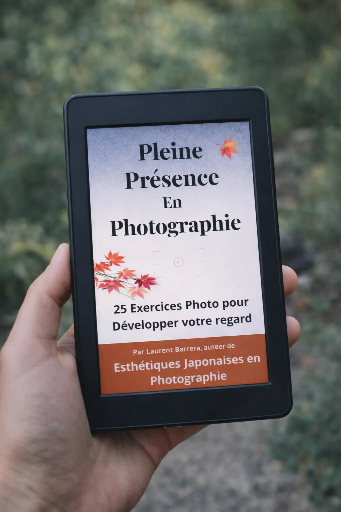
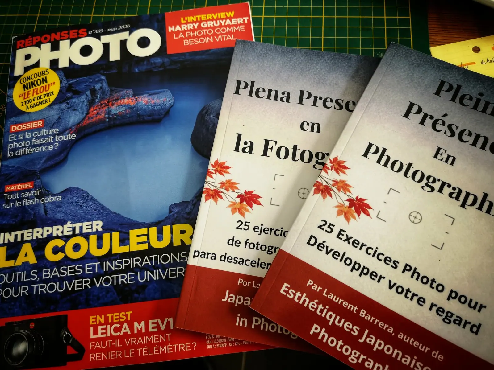

Essai et pratique · Février 2026
Pleine Présence en Photographie
25 exercices photo pour développer votre regard

Le livre
Et si photographier consistait d’abord à être pleinement présent ? Ce livre propose une approche plus contemplative de la photographie, fondée sur l’attention, le silence et la relation au monde. Une invitation à ralentir, à regarder autrement et à faire de l’acte photographique une véritable expérience de présence.
La revue Réponses Photo l’a mis à l’honneur dans sa rubrique « L’essentiel » (n° 389, mai 2026).


Fiche du livre
Pleine Présence en Photographie
- Parution
- Février 2026
- Langues
- français, anglais, espagnol
- Formats
- papier et numérique
- Prix
- à compléter